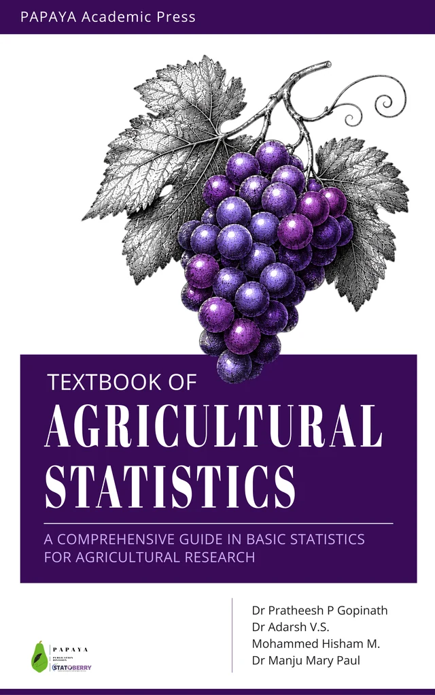
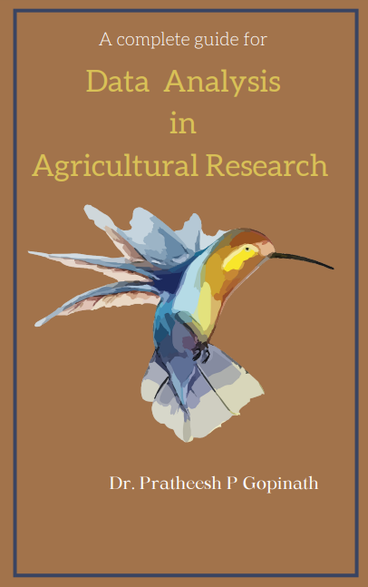
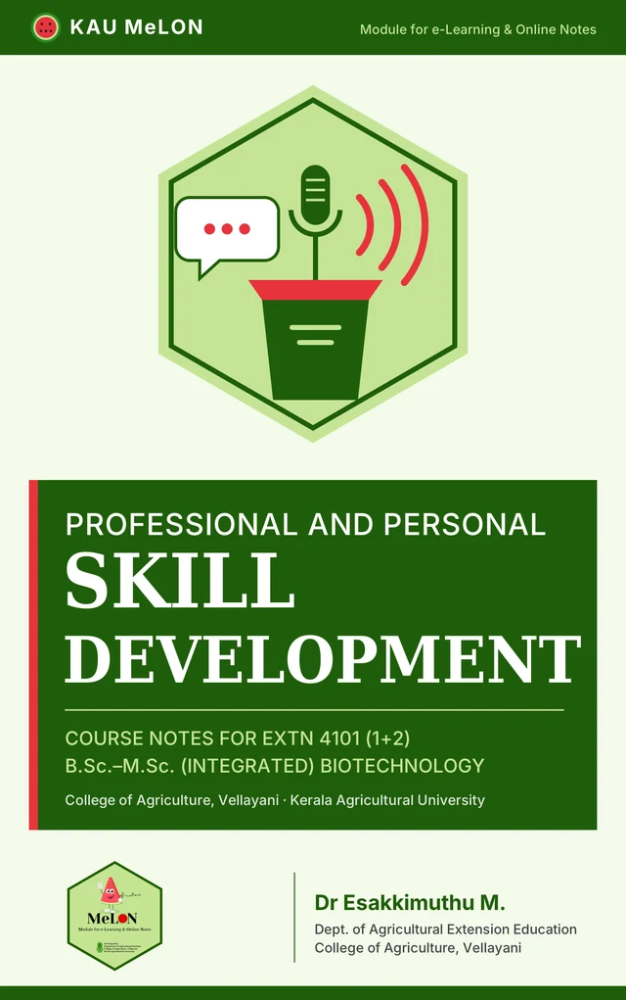
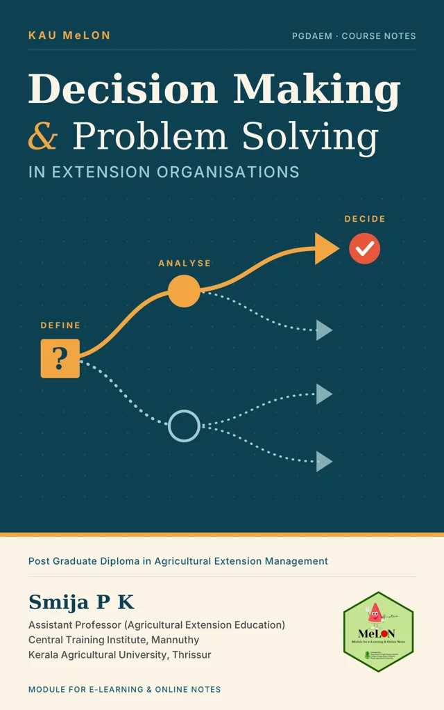
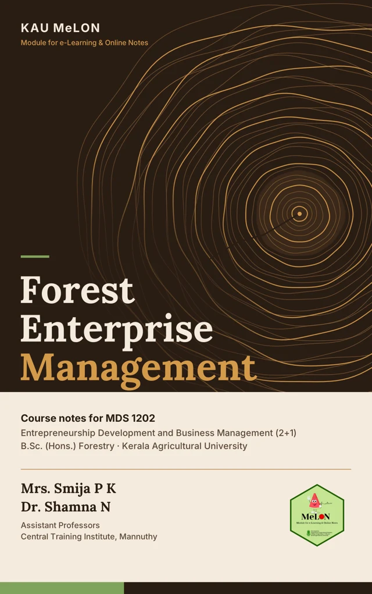

Ag. Statistics

STAT 3202
Textbook of Agricultural Statistics
Learn the ideas behind agricultural research through worked examples, statistical methods and experimental design.
Loading usage…
Start readingFree online reading, wherever you study. Choose a book to open its full chapter list. Explore textbooks and course notes in statistics, R programming, and professional and personal skill development.
5 books available

Learn the ideas behind agricultural research through worked examples, statistical methods and experimental design.
Undergraduate · Online textbook
Loading usage…
Start reading →
From your first R commands to cleaning, visualization, statistical analysis and reproducible reports.
14 browser R laboratories · Practical companion
Loading usage…
Start reading →
Build communication, presentation, leadership and time-management skills through practical activities.
Dr. Esakkimuthu M. · Integrated Biotechnology
Loading usage…
Start reading →
Explore decision-making methods, group decisions and practical approaches to solving problems in extension organisations.
Smija P K · Postgraduate diploma course notes
Loading usage…
Start reading →
Explore production, personnel, finance, marketing, risk and supply chains for forest enterprises.
Mrs. Smija P K & Dr. Shamna N · B.Sc. (Hons.) Forestry
Loading usage…
Start reading →Usage shown for the last 30 days. An engaged read means at least 30 estimated active seconds.
No matching books. Try “R” or “statistics”, or clear your search.
Reading on your phone? Open a book, use its chapter menu and bookmark the chapter you are studying. More reading tips.